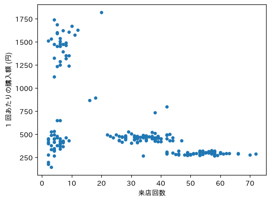
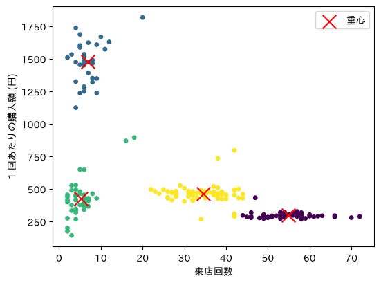
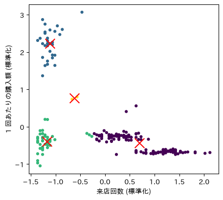
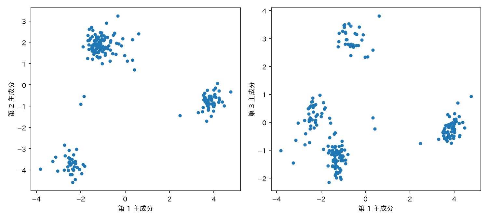
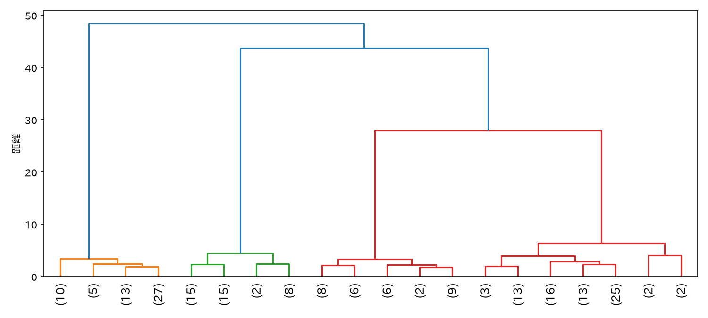
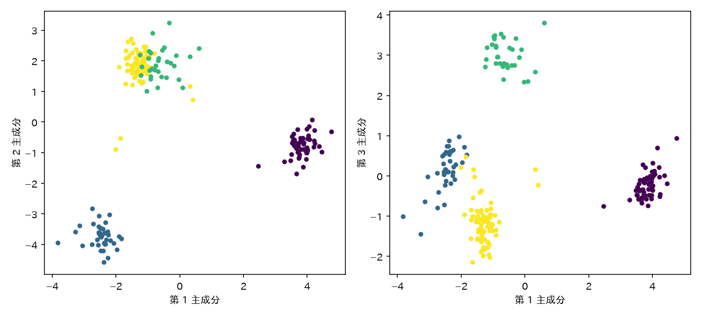
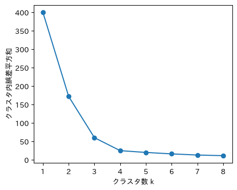

クラスタリングと主成分分析
クラスタリングとパターン発見
教師あり学習では, 正解ラベルの付いたデータから予測規則を学びます. 教師なし学習では正解ラベルを使わずにデータの構造を見つけるため, 似たデータをまとめるクラスタリング, 多数の項目を少数の項目にまとめる次元削減, 同時に起こりやすい項目の組を見つけるアソシエーション分析などの手法を使います. 例題では 1 つの購買記録を, 見る単位を変えながらそれぞれの手法に適用します (一部の例では, 生成したデータも使います).
クラスタリングと主成分分析のコード例には次のライブラリを使います. uv add で追加してください.
uv add pandas matplotlib matplotlib-fontja scikit-learn scipy mlxtend例題のデータ: 大学の売店の購買記録
こちらのデータは, 売店の会員の退会で会員の退会を予測した大学の売店の, 1 学期分 (4 月から 7 月) の会員の購買記録です (練習用に作成した架空のデータです). 売店の会員の退会のデータは, この記録を会員ごとに集計したものでした. 1 行がレシート 1 枚に載った 1 品目を表します.
| 列 | 内容 |
|---|---|
receipt_id |
レシート番号 (1 回の買い物ごとに 1 つ) |
member_id |
会員番号 |
date, time |
買い物をした日付と時刻 |
item |
品目 (弁当, おにぎり, コーヒー, ノートなど 15 種類) |
category |
品目のカテゴリ (食事, 飲料, 菓子, 文具) |
price |
価格 (円) |
import pandas as pd
log = pd.read_csv('data/store_log.csv', encoding='utf-8-sig')
print(log.head())
"""
receipt_id member_id date time item category price
0 1 1056 2026-04-13 11:02 お茶 飲料 130
1 1 1056 2026-04-13 11:02 弁当 食事 500
2 2 1065 2026-04-13 11:11 ジュース 飲料 140
3 2 1065 2026-04-13 11:11 弁当 食事 500
4 3 1041 2026-04-13 11:13 おにぎり 食事 150
"""
print(len(log), log['receipt_id'].nunique(), log['member_id'].nunique())
"""
12640 5877 200
"""200 人の会員が 5877 回の買い物をし, 合わせて 12640 行の記録があります.
この記録は, 見る単位を変えると 2 通りの分析に使えます.
- 会員単位: 会員ごとに記録を集計すると, 「この会員はどれくらいの頻度で来て, 1 回にいくら使うか」という数値の組になります. 何を買うか (品目ごとの購入額の割合) も加えられます. 似た買い方をする会員をまとめるのがクラスタリングです (クラスタリング).
- レシート単位: レシートごとに品目をまとめると, 1 回の買い物で一緒に買われた品目の集合になります. 一緒に買われやすい品目の組を見つけるのがアソシエーション分析です (パターン発見: アソシエーション分析).
会員ごとの集計
会員ごとに, 来店回数 (レシートの枚数) と 1 回あたりの購入額を求めます. groupby で会員ごとにまとめ, nunique() で重複を除いたレシート番号の数を数えます. 1 回あたりの購入額は, 価格の合計を来店回数で割って求めます.
g = log.groupby('member_id')
member = pd.DataFrame({
'visits': g['receipt_id'].nunique(), # 来店回数
'amount_per_visit': g['price'].sum() / g['receipt_id'].nunique(), # 1回あたりの購入額
})
print(member.head().round(1))
"""
visits amount_per_visit
member_id
1001 27 468.5
1002 38 438.4
1003 32 451.2
1004 32 415.0
1005 28 440.4
"""来店回数と 1 回あたりの購入額の散布図を描いてみます.
import matplotlib.pyplot as plt
import matplotlib_fontja
plt.scatter(member['visits'], member['amount_per_visit'], s=15)
plt.xlabel('来店回数')
plt.ylabel('1 回あたりの購入額 (円)')
plt.show()
plt.close()
散布図には, 点が密に集まった塊がいくつか見えます. 来店回数が少なく 1 回に 1500 円前後を使う会員, 来店回数が少なく 1 回あたり 400 円前後の会員, 30 回前後来て 1 回あたり 450 円前後の会員, 50 回以上来て 1 回あたり 300 円前後の会員です. 塊のどれにも入らない位置にも, 数人の会員がいます. 項目が 2 つなら塊を目で数えられますが, 項目が増えると散布図には描けないので, 塊を計算で求める手法が要ります.
クラスタリング
観測対象を, 互いに似たもの同士が同じグループに入るように分ける手法をクラスタリングといい, 分けられた各グループをクラスタといいます.
クラスタリングと分類は, どちらもデータをグループに分けます. 違いは正解の有無です. 分類では正解ラベルの付いたデータから分け方の規則を学び, 正解率で評価できます. クラスタリングには正解ラベルがありません. そのため, 何をもって「似ている」とするか, いくつのクラスタに分けるかを分析者が決め, 得られたクラスタが何を表すかも分析者が解釈します. 売店の会員にも「昼食を買う会員」のような正解ラベルは付いていません.
「似ている」の尺度には, ユークリッド距離を使います. 来店回数 (回) と購入額 (円) は単位も散らばりも違うので, 標準化してから距離を計算します.
# 項目ごとに標準化する (平均0, 標準偏差1)
z = (member - member.mean()) / member.std(ddof=0)クラスタリングの手法は, 大きく 2 種類に分かれます.
- 非階層クラスタリング: クラスタの数を先に決め, データをその数のクラスタに分割します. 代表例は k-means 法です.
- 階層クラスタリング: 近いデータ同士を順に併合していき, 併合の過程を樹形図として得ます. クラスタの数は樹形図を見てから決めます.
非階層クラスタリング: k-means 法
k-means 法は, クラスタの数 K を決めたうえで, 各データを最も近い重心 (クラスタに属するデータの平均の位置) のクラスタに割り当てる手法です. 重心は割り当てが決まらないと計算できず, 割り当ては重心が決まらないと決められません. そこで, 次の手順で両者を交互に更新します.
- K 個の重心の初期値を置きます.
- 各データを, 最も近い重心のクラスタに割り当てます.
- 各クラスタに属するデータの平均を計算し, 新しい重心とします.
- 割り当てが変わらなくなるまで, 2 と 3 を繰り返します.
次の図は, 標準化した会員のデータに K = 4 で k-means 法を適用したときの途中経過です. 赤い × が重心, 点の色が割り当てられたクラスタを表します. 初期値では重心が塊から外れていますが, 更新のたびに重心が塊の中心へ移ります. 4 回目の更新では, 4 つの重心がそれぞれ 1 つの塊の中心に来ています.

k-means 法は, 各データと所属クラスタの重心との距離の 2 乗の総和 (クラスタ内誤差平方和) を小さくする手法です. クラスタ c に属するデータの集合を C_c, その重心を \boldsymbol{\mu}_c とすると, クラスタ内誤差平方和は次の式で表されます.
W = \sum_{c=1}^{K} \sum_{i \in C_c} d(\boldsymbol{x}_i, \boldsymbol{\mu}_c)^2
手順 2 (最も近い重心への割り当て) も手順 3 (平均への重心の移動) も W を増やさないので, 更新を繰り返すと W はいずれ減らなくなり, 割り当てが止まります.
scikit-learn による k-means 法
scikit-learn の KMeans で, 標準化した会員のデータを 4 つのクラスタに分けます.
from sklearn.cluster import KMeans
# クラスタ数4, 初期値を変えて10回実行し最良の結果を採用する
km = KMeans(n_clusters=4, random_state=0, n_init=10)
member['cluster'] = km.fit_predict(z) # 各会員のクラスタ番号
print(member['cluster'].value_counts().sort_index())
"""
cluster
0 52
1 31
2 42
3 75
"""
# クラスタごとに, もとの単位での平均を求める
print(member.groupby('cluster')[['visits', 'amount_per_visit']].mean().round(1))
"""
visits amount_per_visit
cluster
0 54.8 296.9
1 6.9 1476.9
2 5.2 427.6
3 34.6 461.2
"""
plt.scatter(member['visits'], member['amount_per_visit'], c=member['cluster'], cmap='viridis', s=15)
plt.xlabel('来店回数')
plt.ylabel('1 回あたりの購入額 (円)')
plt.show()
plt.close()
k-means 法は, 散布図で見えた 4 つの塊をそれぞれ 1 つのクラスタとして取り出しました. 塊から離れた数人の会員も, いずれかのクラスタに割り当てられています. k-means 法では, どのデータも必ずどれか 1 つのクラスタに属します.
クラスタ番号はクラスタを区別する記号にすぎず, 番号の大小に意味はありません. 実行する環境によって番号が入れ替わることもあるので, 番号ではなくクラスタの平均を見て, どのクラスタかを判断してください.
クラスタが何を表すかは, 集計に使わなかった情報も合わせて見ると分かりやすくなります. 会員ごとに, 購入額のうち各カテゴリが占める割合を求め, クラスタごとに平均します.
# 会員×カテゴリの購入額の表を作り, 行の合計で割って割合にする
share = log.pivot_table(index='member_id', columns='category', values='price',
aggfunc='sum', fill_value=0)
share = share.div(share.sum(axis=1), axis=0)
print(share.join(member['cluster']).groupby('cluster').mean().round(2))
"""
category 文具 菓子 食事 飲料
cluster
0 0.00 0.40 0.07 0.53
1 0.15 0.12 0.55 0.19
2 0.85 0.00 0.02 0.13
3 0.00 0.04 0.73 0.23
"""pivot_table は, 行 (index) と列 (columns) に指定した項目の組み合わせごとに値を集計し, 表の形に並べるメソッドです. 2 つの表を合わせると, 4 つのクラスタに次のような名前を付けられます.
| クラスタ | 来店回数 | 1 回あたりの購入額 | 多いカテゴリ | 名前 |
|---|---|---|---|---|
| 0 | 約 55 回 | 約 300 円 | 飲料, 菓子 | カフェ利用の会員 |
| 1 | 約 7 回 | 約 1480 円 | 全カテゴリ | まとめ買いの会員 |
| 2 | 約 5 回 | 約 430 円 | 文具 | 文具を買う会員 |
| 3 | 約 35 回 | 約 460 円 | 食事 | 昼食を買う会員 |
名前はデータが付けたものではなく, 分析者が平均を読んで付けたものです. このように, クラスタごとの特徴を言葉にするところまでが, クラスタリングによる分析です.
初期値への依存
k-means 法の結果は重心の初期値に左右されます. 次の図は, n_init=1 (初期値を 1 通りだけ試す) で, 別の乱数から初期値を選んだときの結果です. 昼食の会員とカフェ利用の会員が 1 つのクラスタにまとめられ, 塊から離れた 2 人の会員だけの小さなクラスタができています.

この状態でも, どのデータも最も近い重心に割り当てられているので, 手順 2 と 3 を繰り返しても変化しません. クラスタ内誤差平方和は 56.7 で, 先ほどの結果 (24.7) の 2 倍以上あります. k-means 法の更新は W を減らす方向にしか進まないので, 最初に悪い位置から始めると, より良い分け方があっても抜け出せません.
KMeans の n_init=10 は, 初期値を変えて 10 回実行し, クラスタ内誤差平方和が最も小さい結果を採用する指定です. random_state=0 は初期値の乱数を固定し, 何度実行しても同じ結果が得られるようにする指定です.
この節に対応する演習は, Exercise DSP7-1とExercise DSP7-3です.
次元削減: 主成分分析
ここまでのクラスタリングには, 来店回数と 1 回あたりの購入額の 2 項目だけを使いました. 購買記録には, 会員が何を買ったか (15 品目) も記録されています. 品目ごとの購入額の割合を加えると, 会員 1 人を 17 項目で表せます.
# 会員×品目の購入額の表を作り, 行の合計で割って割合にする
item_share = log.pivot_table(index='member_id', columns='item', values='price',
aggfunc='sum', fill_value=0)
item_share = item_share.div(item_share.sum(axis=1), axis=0)
# 来店回数と1回あたりの購入額に, 15品目の割合を横に並べる
feat = member[['visits', 'amount_per_visit']].join(item_share)
print(feat.shape)
"""
(200, 17)
"""
z17 = (feat - feat.mean()) / feat.std(ddof=0) # 項目ごとに標準化する17 項目の散布図は描けません. 2 項目ずつの散布図なら描けますが, 組み合わせは 136 通りあり, どの組み合わせの図にも全体の構造が現れるとは限りません. そこで, 多数の項目が持つ情報をできるだけ失わずに, 少数の項目にまとめます. データを表す項目の数を次元といい, 次元を減らす手法を次元削減といいます. 次元削減の代表的な手法が主成分分析 (PCA: Principal Component Analysis) です.
主成分分析の考え方
2 項目のデータで考えます. 次の図の (a) は, 標準化した 2 つの変数 x, y の散布図です. 点は右上がりの直線の周りに集まっています. 点のばらつき (分散) が最も大きい方向を第 1 主成分といい, 図の赤い直線がその方向です. 各点から赤い直線へ垂線を下ろし, 垂線の足の位置 (原点からの符号付きの距離) だけを残すと, (b) のように各点を 1 つの数値で表せます. この数値を主成分得点といいます.

1 次元で表すと, 垂線の長さ (第 1 主成分に直交する方向の位置) の情報が失われます. 第 1 主成分は分散が最も大きい方向なので, 1 本の直線に射影する方法のうちで, 失われる情報が最も少なくなります. 失われた方向のばらつきは, 第 1 主成分に直交する方向 (図のオレンジの矢印) が表します. これを第 2 主成分といいます. 項目が n 個あるときは, それまでの主成分のすべてに直交する方向のうち分散が最大の方向を順に選び, 第 n 主成分まで求めます.
式で書くと次のようになります. 標準化した i 番目のデータを, n 個の項目の値を並べた行ベクトル \boldsymbol{x}_i = [x_{i1}, \dots, x_{in}] で表します. 長さ 1 の列ベクトル \boldsymbol{w} = [w_1, \dots, w_n]^\top について, \boldsymbol{x}_i \boldsymbol{w} = w_1 x_{i1} + \dots + w_n x_{in} は, データ i を \boldsymbol{w} の方向の直線に射影した位置です. 第 1 主成分の方向 \boldsymbol{w}_1 は, データ N 個の \boldsymbol{x}_i \boldsymbol{w} の分散を最大にする \boldsymbol{w} です.
\boldsymbol{w}_1 = \mathop{\mathrm{arg\,max}}_{\|\boldsymbol{w}\| = 1} \frac{1}{N} \sum_{i=1}^{N} (\boldsymbol{x}_i \boldsymbol{w})^2
各項目を標準化して平均を 0 にしたので, \boldsymbol{x}_i \boldsymbol{w} の平均も 0 になり, 2 乗の平均がそのまま分散になります. 第 2 主成分の方向 \boldsymbol{w}_2 は, \boldsymbol{w}_1 に直交する \boldsymbol{w} のうちで同じ分散を最大にするものです. \boldsymbol{w}_k の各成分は, 第 k 主成分の得点を計算するときに各項目に掛ける重みで, 主成分の係数と呼ばれます. 上の図のデータでは \boldsymbol{w}_1 = [0.71, 0.71]^\top なので, 第 1 主成分得点は 0.71x + 0.71y です.
各主成分の得点の分散が, もとの全項目の分散の合計に占める割合を寄与率といいます. 寄与率は, その主成分が, もとのデータのばらつきのうちどれだけを表しているかを示します. 上の図のデータでは第 1 主成分の寄与率が 0.91 なので, 1 次元にしてもばらつきの 91% が残ります.
scikit-learn による主成分分析
17 項目を標準化したデータに, scikit-learn の PCA を適用します.
from sklearn.decomposition import PCA
pca = PCA()
score = pca.fit_transform(z17) # 各会員の主成分得点 (200行×17列)
print(pca.explained_variance_ratio_[:5].round(3)) # 寄与率
"""
[0.357 0.291 0.125 0.05 0.031]
"""
print(pca.explained_variance_ratio_.cumsum()[:5].round(3)) # 累積寄与率
"""
[0.357 0.648 0.773 0.823 0.855]
"""fit_transform は, 主成分を求め (fit), 各データの主成分得点を計算 (transform) します. 戻り値の 0 列目が第 1 主成分の得点, 1 列目が第 2 主成分の得点です. explained_variance_ratio_ に各主成分の寄与率が入っています. 寄与率を第 1 主成分から順に足したものを累積寄与率といいます. 寄与率と累積寄与率をグラフにします.
import numpy as np
ratio = pca.explained_variance_ratio_
k = np.arange(1, len(ratio) + 1) # 主成分の番号 1, 2, ..., 17
fig, ax = plt.subplots()
ax.bar(k, ratio, label='寄与率')
ax.plot(k, ratio.cumsum(), marker='o', color='tab:red', label='累積寄与率')
ax.set_xticks(k)
ax.set_xlabel('主成分')
ax.set_ylabel('割合')
ax.legend()
plt.show()
plt.close(fig)
累積寄与率は第 3 主成分までで 0.773 になり, 第 4 主成分からは 1 つ増やしても 0.05 以下しか増えません. 17 項目のばらつきの 77% を 3 つの主成分で表せるので, 以下では第 3 主成分までを使います. 使う主成分の数は, このように寄与率が急に小さくなる位置で決めるか, 累積寄与率が目安の値 (70% や 80% がよく使われます) を超える位置で決めます.
主成分が何を表すかは, 係数 (pca.components_) を見て判断します. components_ の k-1 行目が第 k 主成分の係数です.
coef = pd.DataFrame(pca.components_[:3].T, index=feat.columns,
columns=['PC1', 'PC2', 'PC3'])
print(coef.round(2))
"""
PC1 PC2 PC3
visits 0.32 0.10 -0.36
amount_per_visit -0.10 0.18 0.57
おにぎり -0.17 0.35 -0.23
お茶 -0.28 0.12 -0.34
カップ麺 -0.14 0.33 0.28
ガム 0.35 -0.02 0.21
クッキー 0.39 -0.08 0.02
コーヒー 0.39 -0.08 -0.01
サンドイッチ -0.14 0.31 0.25
ジュース 0.13 0.29 0.28
チョコレート 0.35 0.06 0.08
ノート -0.17 -0.31 0.09
パン 0.18 0.30 0.00
ボールペン -0.17 -0.27 0.14
ルーズリーフ -0.18 -0.31 0.15
弁当 -0.18 0.35 -0.22
消しゴム -0.13 -0.20 0.04
"""- 第 1 主成分: コーヒー, クッキー (0.39), ガム, チョコレート (0.35) と来店回数 (0.32) の係数が正で大きく, お茶 (-0.28) が負です. コーヒーと菓子をよく買い, よく来る会員ほど得点が高くなります.
- 第 2 主成分: 弁当, おにぎり (0.35), カップ麺, サンドイッチ, パンの係数が正, ノート, ルーズリーフ (-0.31), ボールペンが負です. 食事の品目を買う会員ほど高く, 文具を買う会員ほど低くなります.
- 第 3 主成分: 1 回あたりの購入額 (0.57) が正, 来店回数 (-0.36) が負です. たまに来て 1 回に多く買う会員ほど高くなります.
主成分の向き (係数の符号) は, 実行する環境によって反転することがあります. 反転しても主成分得点の正負が入れ替わるだけなので, 読み取れる内容は変わりません.
第 1 主成分と第 2 主成分, 第 1 主成分と第 3 主成分の得点で散布図を描きます.
fig, (ax1, ax2) = plt.subplots(1, 2, figsize=(10, 4.5))
ax1.scatter(score[:, 0], score[:, 1], s=15)
ax1.set_xlabel('第 1 主成分')
ax1.set_ylabel('第 2 主成分')
ax2.scatter(score[:, 0], score[:, 2], s=15)
ax2.set_xlabel('第 1 主成分')
ax2.set_ylabel('第 3 主成分')
plt.show()
plt.close(fig)
左の図には塊が 3 つ見えます. 第 1 主成分が大きい右の塊はコーヒーと菓子を買う会員, 第 2 主成分が小さい左下の塊は文具を買う会員, 第 2 主成分が大きい左上の塊は食事の品目を買う会員です. 右の図で第 1 主成分と第 3 主成分の組にすると, 左上にあった食事の会員が, 第 3 主成分が 3 付近の塊と -1 付近の塊に分かれます. 第 3 主成分は 1 回あたりの購入額が大きい会員ほど高いので, 上の塊は 1 回に多く買う会員, 下の塊は来店回数の多い会員です. 第 2 主成分までの散布図では重なっていた 2 つの塊が, 第 3 主成分では分かれています.
この節に対応する演習は, Exercise DSP7-4です.
階層クラスタリングとデンドログラム
階層クラスタリングは, 近いもの同士を順に併合してクラスタを大きくしていく手法です.
- 各データを, それぞれ 1 つのデータだけを含むクラスタとします.
- 最も近い 2 つのクラスタを併合します.
- 全体が 1 つのクラスタになるまで 2 を繰り返します.
手順 2 では, データ同士でなく, クラスタ同士の距離が要ります. クラスタ同士の距離の定め方を連結法といい, 次のようなものがあります.
- 最短距離法 (単連結法): 2 つのクラスタから 1 つずつデータを選んだ組のうち, 最も近い組の距離.
- 最長距離法 (完全連結法): 同じく, 最も遠い組の距離.
- 群平均法: すべての組の距離の平均.
- ウォード法: 2 つのクラスタを併合したときの, クラスタ内誤差平方和の増加量. 増加量が最も小さい組から併合します.
次の図は, 青とオレンジの 2 つのクラスタについて, 各連結法が使う距離を赤い線で示したものです. 最短距離法と最長距離法は 1 組の距離だけを, 群平均法は 25 組すべての距離を使います. ウォード法の図の × は重心です. 併合後の重心までの距離 (赤い実線) の 2 乗の和から, 併合前のそれぞれの重心までの距離 (点線) の 2 乗の和を引いた値が, クラスタ内誤差平方和の増加量です.

併合の過程を樹形図で表したものをデンドログラムといいます. 横軸にデータが並び, 縦軸は併合したときのクラスタ間の距離を表します. 低い位置でつながっているデータほど似ています. デンドログラムを好きな高さで水平に切ると, 切り口より下でつながっているデータが 1 つのクラスタになります. 切る高さを変えればクラスタの数が変わるので, 数を決める前に全体の構造を見られます.
scipy による階層クラスタリング
次元削減: 主成分分析で求めた, 第 3 主成分までの主成分得点をウォード法でクラスタリングします. 200 人分をすべて横軸に並べると読めないので, truncate_mode='lastp' で最後の 20 回の併合だけを描きます.
from scipy.cluster.hierarchy import linkage, dendrogram, fcluster
# 第3主成分までの得点について, ウォード法で併合の過程を計算する
Z = linkage(score[:, :3], method='ward')
fig, ax = plt.subplots(figsize=(10, 4.5))
dendrogram(Z, truncate_mode='lastp', p=20, leaf_rotation=90, ax=ax)
ax.set_ylabel('距離')
plt.show()
plt.close(fig)
横軸の括弧付きの数字は, その枝の下にまとめられた会員の人数です. 高さ 48 と 44 の併合で全体が 3 つに分かれ, 高さ 28 の併合でさらに 2 つに分かれます. その下の併合はすべて高さ 7 以下です. 併合の高さが 28 から 7 以下へ大きく下がるので, 高さ 10 から 25 の間で切って 4 つのクラスタにするのが自然です.
指定した数のクラスタに切るには fcluster を使います. 4 つに切り, 2 項目で求めた k-means 法の結果とクロス表で比べます.
member['hcluster'] = fcluster(Z, t=4, criterion='maxclust') # 4つのクラスタに切る
print(pd.crosstab(member['cluster'], member['hcluster']))
"""
hcluster 1 2 3 4
cluster
0 51 0 0 1
1 0 0 31 0
2 0 40 0 2
3 4 0 0 71
"""
cols = ['visits', 'amount_per_visit', '弁当', 'コーヒー', 'ルーズリーフ']
print(feat.groupby(member['hcluster'])[cols].mean().round(2))
"""
visits amount_per_visit 弁当 コーヒー ルーズリーフ
hcluster
1 53.89 293.97 0.00 0.46 0.00
2 4.58 404.87 0.00 0.00 0.39
3 6.94 1476.89 0.23 0.05 0.07
4 33.99 481.45 0.47 0.01 0.00
"""各行の度数がほぼ 1 つの列に集まっているので, 17 項目を 3 つの主成分にまとめてから階層クラスタリングした結果は, 2 項目の k-means 法とほぼ同じ 4 つのクラスタになります. クラスタごとの平均から, 1 はカフェ利用 (コーヒーの割合 0.46), 2 は文具 (ルーズリーフの割合 0.39), 3 はまとめ買い (1 回あたり約 1480 円), 4 は昼食 (弁当の割合 0.47) の会員と読めます. 2 つの手法で所属が違う会員は 7 人で, 2 項目の散布図で塊の境界付近か塊と塊の間にいた会員です. 来店回数と購入額だけでは決めにくかった所属を, 何を買ったかの情報で決めています.
主成分得点の散布図を, 階層クラスタリングの結果で色分けします.
fig, (ax1, ax2) = plt.subplots(1, 2, figsize=(10, 4.5))
ax1.scatter(score[:, 0], score[:, 1], c=member['hcluster'], cmap='viridis', s=15)
ax1.set_xlabel('第 1 主成分')
ax1.set_ylabel('第 2 主成分')
ax2.scatter(score[:, 0], score[:, 2], c=member['hcluster'], cmap='viridis', s=15)
ax2.set_xlabel('第 1 主成分')
ax2.set_ylabel('第 3 主成分')
plt.show()
plt.close(fig)
左の図の左上の塊には, 2 つのクラスタ (まとめ買いと昼食の会員) の点が混ざっています. 右の図では, この 2 つのクラスタが第 3 主成分の方向に分かれています.
使う主成分を第 2 主成分までに減らすと, この 2 つのクラスタを分けられなくなります.
# 第2主成分までの得点で, 同じように4つに切る
h2 = fcluster(linkage(score[:, :2], method='ward'), t=4, criterion='maxclust')
print(pd.crosstab(member['cluster'], h2))
"""
col_0 1 2 3 4
cluster
0 51 0 0 1
1 0 0 14 17
2 0 40 0 2
3 4 0 2 69
"""まとめ買いの会員 (k-means 法のクラスタ 1) の 31 人のうち 17 人が, 昼食の会員と同じクラスタ 4 に入ります. クラスタ 3 の 16 人は, 残るまとめ買いの会員 14 人と昼食の会員 2 人です. 寄与率の小さい主成分を捨てると, その主成分の方向にしか表れない違いも失われます. 使う主成分の数を寄与率で決めるのは, 失う情報の量を確かめるためです.
連結法を変えると結果も変わります. 最短距離法は, 最も近い 1 組の距離だけでクラスタ同士をつなぐので, 塊の間に点が並んでいると別々の塊まで 1 つにつながります. データを同程度の大きさのグループに分ける目的なら, ウォード法か群平均法をまず試します.
この節に対応する演習は, Exercise DSP7-2です.
クラスタリング結果の評価: エルボー法とシルエット係数
クラスタリングには正解ラベルが無いので, 分類の正解率は計算できません. 代わりに, クラスタ内のデータがまとまっているか, 他のクラスタと離れているかを数値にします. この数値は主に, クラスタの数 K を決めるときに使います. 非階層クラスタリング: k-means 法では散布図を見て K = 4 としましたが, 項目が 3 つ以上あると散布図 1 枚では塊を数えられません.
エルボー法
k-means 法のクラスタ内誤差平方和 W は, K を増やすほど小さくなります. データの数だけクラスタを作れば W = 0 になるので, W が最小になる K を選ぶわけにはいきません. そこで, K を 1 から順に増やして W をグラフにし, 減り方が急に緩やかになる K を選びます. グラフが肘 (エルボー) のように折れ曲がる点を探すので, エルボー法と呼ばれます.
X = z[['visits', 'amount_per_visit']]
inertias = []
for k in range(1, 9):
km = KMeans(n_clusters=k, random_state=0, n_init=10).fit(X)
inertias.append(km.inertia_) # クラスタ内誤差平方和
plt.plot(range(1, 9), inertias, marker='o')
plt.xlabel('クラスタ数 k')
plt.ylabel('クラスタ内誤差平方和')
plt.show()
plt.close()
K = 4 までは W が大きく減り (400 → 172 → 60 → 25), K = 5 以降はほとんど減りません. 4 つ目のクラスタを加えると塊が 1 つずつに分かれますが, 5 つ目以降は同じ塊を割るだけだからです. この図からは K = 4 を選びます.
シルエット係数
折れ曲がりがはっきりしないグラフでは, エルボー法で K を決められません. そのようなときは, データ 1 つずつについて「自分のクラスタにどれだけ馴染んでいるか」を測るシルエット係数を使います. データ i について,
- a(i): 同じクラスタに属する他のデータとの距離の平均
- b(i): 最も近い別のクラスタに属するデータとの距離の平均
とすると, シルエット係数は次の式で表されます.
s(i) = \frac{b(i) - a(i)}{\max(a(i), b(i))}
s(i) は -1 から 1 の値をとります. 1 に近いほど, 自分のクラスタの中では近く, 別のクラスタからは遠い位置にあります. 0 付近は 2 つのクラスタの境界にあるデータ, 負の値は別のクラスタに割り当てた方が近いデータです. 全データの s(i) の平均を, クラスタリング全体の評価に使います.
from sklearn.metrics import silhouette_score
scores = []
for k in range(2, 9): # クラスタが2つ以上ないと b(i) が定義できない
labels = KMeans(n_clusters=k, random_state=0, n_init=10).fit_predict(X)
scores.append(silhouette_score(X, labels))
plt.plot(range(2, 9), scores, marker='o')
plt.xlabel('クラスタ数 k')
plt.ylabel('シルエット係数の平均')
plt.show()
plt.close()
シルエット係数の平均は K = 4 で最大 (0.673) になり, エルボー法と同じ K を支持します. ただし K = 2 (0.643) や K = 3 (0.646) との差は小さく, 指標だけで K がはっきり決まるわけではありません. 指標の差が小さいときは, 候補の K ごとにクラスタの平均を求め, 特徴を言葉で説明できる分け方を選びます (Exercise DSP7-1).
演習
Exercise DSP7-1
提出ファイル dsp7-1.py
カテゴリの割合を加えた k-means 法とクラスタ数の選択
対応する節: 非階層クラスタリング: k-means 法, クラスタリング結果の評価: エルボー法とシルエット係数
会員ごとの来店回数と 1 回あたりの購入額に, カテゴリ (食事, 飲料, 菓子, 文具) ごとの購入額の割合を加えた 6 項目を標準化し, k-means 法 (random_state=0, n_init=10) でクラスタリングしてください.
- K = 2, \dots, 8 のシルエット係数の平均を求め, K を選んでください. クラスタリングの評価で求めた 2 項目での値 (K = 4 で 0.673) とも比べてください.
- 選んだ K でクラスタごとに 6 項目の平均を求め, 2 項目での k-means 法の結果とクロス表で比べてください.
提出ファイル名: dsp7-1.py
回答例
import pandas as pd
from sklearn.cluster import KMeans
from sklearn.metrics import silhouette_score
log = pd.read_csv('data/store_log.csv', encoding='utf-8-sig')
g = log.groupby('member_id')
member = pd.DataFrame({
'visits': g['receipt_id'].nunique(),
'amount_per_visit': g['price'].sum() / g['receipt_id'].nunique(),
})
share = log.pivot_table(index='member_id', columns='category', values='price',
aggfunc='sum', fill_value=0)
share = share.div(share.sum(axis=1), axis=0)
# 本文の2項目での結果
z2 = (member - member.mean()) / member.std(ddof=0)
member['cluster'] = KMeans(n_clusters=4, random_state=0, n_init=10).fit_predict(z2)
# 問1: 6項目
feat = member[['visits', 'amount_per_visit']].join(share)
z6 = (feat - feat.mean()) / feat.std(ddof=0)
for k in range(2, 9):
labels = KMeans(n_clusters=k, random_state=0, n_init=10).fit_predict(z6)
print(k, round(silhouette_score(z6, labels), 3))
"""
2 0.561
3 0.694
4 0.809
5 0.731
6 0.729
7 0.6
8 0.563
"""
# 問2
labels6 = KMeans(n_clusters=4, random_state=0, n_init=10).fit_predict(z6)
print(feat.groupby(labels6).mean().round(2))
"""
visits amount_per_visit 文具 菓子 食事 飲料
0 53.89 293.97 0.00 0.41 0.06 0.53
1 4.58 404.87 0.87 0.00 0.00 0.13
2 34.46 470.32 0.00 0.02 0.76 0.21
3 7.55 1440.85 0.16 0.11 0.54 0.18
"""
print(pd.crosstab(member['cluster'], labels6))
"""
col_0 0 1 2 3
cluster
0 51 0 1 0
1 0 0 0 31
2 0 40 0 2
3 4 0 71 0
"""問 1: K = 4 で最大 (0.809) になります. 2 項目のとき (0.673) より大きく, K = 3 や K = 5 との差も広がります. 来店回数と購入額だけでは近かった会員も, 何を買うか (カテゴリの割合) が違えば離れるので, クラスタ同士の間隔が広がったためです.
問 2: 4 つのクラスタは, 本文と同じくカフェ利用 (0), 文具 (1), 昼食 (2), まとめ買い (3) の会員に対応します (番号は実行環境によって入れ替わることがあります). 2 項目の結果と所属が変わったのは 7 人で, いずれも本文の散布図で塊の境界付近か, 塊と塊の間にいた会員です. 例えば, 2 項目では昼食のクラスタに入っていた会員のうち 4 人は, カテゴリの割合を加えるとカフェ利用のクラスタに移ります. 何を買ったかの情報が, 来店回数と購入額だけでは決めにくかった所属を決めています.
Exercise DSP7-2
提出ファイル dsp7-2.py
連結法による階層クラスタリングの違い
対応する節: 階層クラスタリングとデンドログラム
非階層クラスタリング: k-means 法と同じ, 標準化した 2 項目 (来店回数と 1 回あたりの購入額) について, 連結法 (method) を 'single' (最短距離法), 'complete' (最長距離法), 'average' (群平均法), 'ward' (ウォード法) の 4 通りに変えて階層クラスタリングを行ってください. それぞれ fcluster で 4 つのクラスタに切り, 各クラスタの人数と, 来店回数と 1 回あたりの購入額の平均を求めて, 連結法による違いを説明してください.
提出ファイル名: dsp7-2.py
回答例
import pandas as pd
from scipy.cluster.hierarchy import linkage, fcluster
log = pd.read_csv('data/store_log.csv', encoding='utf-8-sig')
g = log.groupby('member_id')
member = pd.DataFrame({
'visits': g['receipt_id'].nunique(),
'amount_per_visit': g['price'].sum() / g['receipt_id'].nunique(),
})
z = (member - member.mean()) / member.std(ddof=0)
for method in ['single', 'complete', 'average', 'ward']:
cl = fcluster(linkage(z, method=method), t=4, criterion='maxclust')
print(method)
print(member.groupby(cl).agg(人数=('visits', 'size'),
来店回数=('visits', 'mean'),
購入額=('amount_per_visit', 'mean')).round(0))出力をまとめると次のようになります (クラスタの並び順は人数と平均から読み取ってください).
| 連結法 | 4 つのクラスタの人数 | 特徴 |
|---|---|---|
| 最短距離法 | 31, 2, 40, 127 | 昼食とカフェ利用の会員が 127 人の 1 つのクラスタになり, 離れた 2 人が独立したクラスタになる |
| 群平均法 | 31, 127, 2, 40 | 最短距離法と同じ分け方 |
| 最長距離法 | 33, 46, 40, 81 | 昼食とカフェ利用の会員は分かれるが, 境界の会員の多くが昼食のクラスタに入る |
| ウォード法 | 33, 40, 54, 73 | 4 つの塊とほぼ一致する |
最短距離法は, 最も近い 1 組の距離でクラスタ同士をつなぎます. 昼食の会員とカフェ利用の会員の塊は来店回数 40 回前後で隣り合っているので, 間の点を伝って 1 つのクラスタにつながります. その結果, 4 つに切ったときの残りの 1 つには, 他から離れた 2 人が入ります. 群平均法も, このデータでは同じ分け方になりました. 最長距離法とウォード法は, 大きさの近いクラスタを作りやすく, 散布図で見える塊に近い分け方になります. 連結法によってクラスタの大きさの偏りが変わるので, 目的 (離れたデータを見つけるのか, 同程度の大きさのグループに分けるのか) に合わせて選びます. なお, 本文の第 3 主成分までの主成分得点では 4 つの塊が互いに離れているので, 4 つの連結法のどれでもほぼ同じ 4 つのクラスタになります. 連結法の違いが結果に表れるのは, 塊の間にデータが並んでいるときです.
Exercise DSP7-4
提出ファイル dsp7-4.py
標準化しない主成分分析
対応する節: 次元削減: 主成分分析
主成分分析の例で用意した 17 項目 (feat) を, 標準化せずにそのまま主成分分析してください.
- 第 3 主成分までの寄与率と, 第 1 主成分の係数を求め, 主成分分析の例で標準化した場合の結果と比べてください.
- 第 3 主成分までの得点をウォード法で 4 つのクラスタに切り, 2 項目の k-means 法の結果とクロス表で比べてください. 標準化したデータの結果と違う理由を, 各項目の標準偏差を求めて説明してください.
提出ファイル名: dsp7-4.py
回答例
import pandas as pd
from sklearn.cluster import KMeans
from sklearn.decomposition import PCA
from scipy.cluster.hierarchy import linkage, fcluster
log = pd.read_csv('data/store_log.csv', encoding='utf-8-sig')
g = log.groupby('member_id')
member = pd.DataFrame({
'visits': g['receipt_id'].nunique(),
'amount_per_visit': g['price'].sum() / g['receipt_id'].nunique(),
})
z = (member - member.mean()) / member.std(ddof=0)
member['cluster'] = KMeans(n_clusters=4, random_state=0, n_init=10).fit_predict(z)
item_share = log.pivot_table(index='member_id', columns='item', values='price',
aggfunc='sum', fill_value=0)
item_share = item_share.div(item_share.sum(axis=1), axis=0)
feat = member[['visits', 'amount_per_visit']].join(item_share)
# 問1: 標準化せずに主成分分析する
pca_raw = PCA()
score_raw = pca_raw.fit_transform(feat)
print(pca_raw.explained_variance_ratio_[:3].round(3))
"""
[0.998 0.002 0. ]
"""
print(pd.Series(pca_raw.components_[0], index=feat.columns).round(2).head(4))
"""
visits -0.03
amount_per_visit 1.00
おにぎり 0.00
お茶 -0.00
dtype: float64
"""
# 問2
cl = fcluster(linkage(score_raw[:, :3], method='ward'), t=4, criterion='maxclust')
print(pd.crosstab(member['cluster'], cl))
"""
col_0 1 2 3 4
cluster
0 0 51 0 1
1 31 0 0 0
2 0 5 4 33
3 0 4 2 69
"""
print(feat.std(ddof=0).round(2).head(4))
"""
visits 20.13
amount_per_visit 407.06
おにぎり 0.06
お茶 0.07
dtype: float64
"""問 1: 第 1 主成分の寄与率が 0.998 で, 第 2 主成分 (0.002) 以降はほとんど 0 です. 第 1 主成分の係数は 1 回あたりの購入額が 1.00 で, 他の項目はほぼ 0 です. 標準化した場合 (寄与率 0.357, 0.291, 0.125) と違い, 第 1 主成分は 1 回あたりの購入額そのものになっています.
問 2: まとめ買いの会員 (k-means 法のクラスタ 1) とカフェ利用の会員 (クラスタ 0) は 1 つずつのクラスタに分かれますが, 文具の会員 (クラスタ 2) の 42 人のうち 33 人が昼食の会員と同じクラスタ 4 に入ります. 1 回あたりの購入額の標準偏差は 407 円, 来店回数は 20 回で, 品目の割合はどれも 0.25 以下です. 主成分分析は分散が最大の方向を選ぶので, 標準化しないと, 単位のせいで数値が大きい 1 回あたりの購入額の方向が第 1 主成分になり, 品目の割合の違いはほとんど得点に入りません. その結果, 購入額で離れたまとめ買い (約 1480 円) とカフェ利用 (約 300 円) は分かれますが, 購入額の近い文具 (約 430 円) と昼食 (約 460 円) の会員は分かれません. 単位の違う項目を主成分分析するときは, 標準化してから行います.